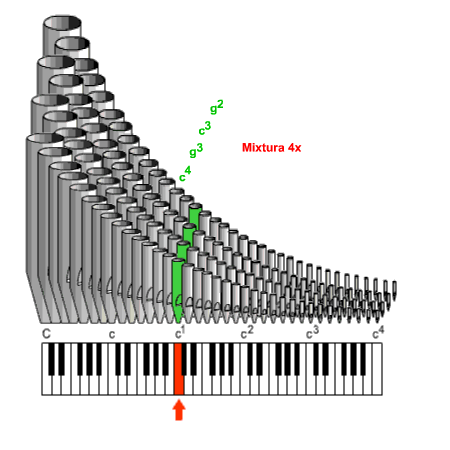

Mixtury
Mixtury jsou plénotvorné smíšené hlasy, které tvoří zvukovou korunu – stříbřitý lesk varhanního zvuku v horních polohách. Tvoří pomyslnou špici zvukové pyramidy. Na rozdíl od předchozích zvukových imitátorů, tvořených většinou široce menzurovanými flétnami, jsou mužské mixtury tvořeny píšťalami principálů. Jejich zvuková barva je spíše neutrální (jsou složeny z kvint a oktáv ve vysokých polohách) a zesilují zvuk dodáním množství harmonických. Mixtury prakticky vždy repetují (popis repetic je níže). Mixtury jsou značeny polohou nejnižší řady, značení může být doplněno počtem píšťalových řad (pokud počet řad není stejný v celém rozsahu klaviatury, značí se rozpětím počtu, např 3 – 6x). Obrázek ukazuje Mixturu (pro zjednodušení zatím bez repetice):
Poznámka: Na tomto a následujících obrázcích jsou píšťaly znázorněny zjednodušeně (menzury) a je jich pro přehlednost obrázku menší počet, ve skutečnosti má řada tolik píšťal, kolik je kláves.

Má-li mixtura větší počet řad (sborů) než 4, bývají některé sbory (zpravidla kvintové) ze zvukových důvodů zdvojeny (mixtura obsahuje dvě řady ve stejné poloze se stejnou velikostí píšťal). Tím se podpoří příslušná poloha a dosáhne se většího lesku zvuku, na případně větší sílu hlasu má zdvojení jen malý vliv.
Mixtury, které jsou složeny pouze z oktávových a kvintových řad se nazývají kvintové. Přidáním terciové řady vznikne terciová mixtura, ve velkých varhanách se používá i septimový či nónový sbor. Zařazením tercií, septim a nón do mixtury se oslabuje její ostrost a lesk, získávají se sice nové zvukové barvy ale snižuje se celková síla pléna. Použití těchto sborů má proto své opodstatnění až ve velkých varhanách s dostatečně vybudovanými zvukovými pyramidami.
 Mixtura
se buduje ve varhanách zpravidla jedna, je-li jich více, označují se jako
Mixtura major (velká) a Mixtura minor
(malá). Zvukově nad Mixturou stojí další smíšený hlas – Akuta.
Je složena z menšího počtu kvintových a oktávových řad, jejichž poloha
je volena nad mixturovými sbory. Akuta (něm. Scharf – ostrý) má velmi
pronikavý a ostrý zvuk a používá se téměř výhradně k projasnění pléna.
Mixtura
se buduje ve varhanách zpravidla jedna, je-li jich více, označují se jako
Mixtura major (velká) a Mixtura minor
(malá). Zvukově nad Mixturou stojí další smíšený hlas – Akuta.
Je složena z menšího počtu kvintových a oktávových řad, jejichž poloha
je volena nad mixturovými sbory. Akuta (něm. Scharf – ostrý) má velmi
pronikavý a ostrý zvuk a používá se téměř výhradně k projasnění pléna.
Dalším velmi vysokým smíšeným hlasem je Cimbál
s jasným a zvonivým zvukem. Historicky patří sice mezi zvukové imitátory,
dnes je však počítán mezi mixtury (v dispozici některých menších varhan
dokonce může Mixturu zastupovat). Většinou je třířadý a vzhledem k vysoké
poloze nejnižší řady (běžně 1/3’) často repetuje
(i dvakrát v každé oktávě). Stejně jako Mixtury se staví kvintový, terciový
a oktávový (někdy se zdvojenými řadami).